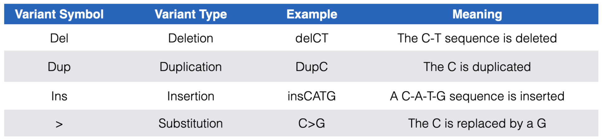
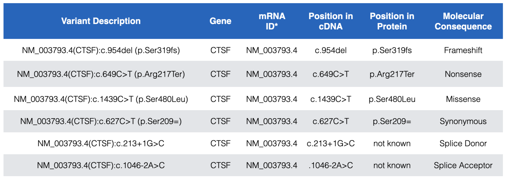
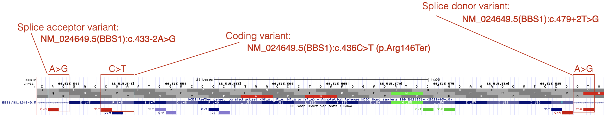

6 Important Genes Identified by DNA Variant
A gene can be defined as a short segment of the genome that is expressed. We see evidence of this with RNAseq data, a technique which identified which segments of the genome are expressed. A gene can also be defined as “a functional unit of inheritance”. With this definition, evidence that a gene exists can be provided when a DNA mutation leads to a phenotypic change. In this chapter you will see how short DNA variants that lead to disease help pinpoint the position of a causative gene. Each short DNA variant indicates how it differs from the “reference genome”44 and can range from benign to pathogenic. To follow along with the text and answer Test Your Understanding questions, you will be using the “DNA Variant” session link. You can also use this link as a starting point to view DNA variant data for any gene of interest.
6.1 Understanding how DNA variants are displayed
Open the “DNA Variant” session link to view the “ClinVar Variants” evidence track. This evidence track is configured to display the “ClinVar Short Variants < 50bp” evidence track. This track shows the genomic positions of DNA substitutions45 or indels46 from the ClinVar database. “ClinVar is a free, public archive of reports of the relationships among human variations and phenotypes, with supporting evidence.”47.
The DNA variants are color coded according to clinical significance: red for pathogenic (P) or likely pathogenic (LP), green for benign (B) or likely benign (LB), dark blue for “variant of uncertain significance” (VUS), dark gray for not provided (OTH) and light blue for “conflicting interpretation of pathogenicity”. Each DNA variant is also displayed according to variant type. See Figure 6.1 for a list of DNA variant types you are likely to encounter.

Figure 6.1: The most common DNA variant symbols you are likely to see in the ClinVar Short Variants < 50 bp substrack.
Each DNA variant in the “ClinVar Short Variants < 50bp” subtrack is clickable. A mouse click will take you to a new page with a table that describes the sequence variant in more detail. Useful information can often be found in the rows entitled, “Link to ClinVar with Variant ID”, “Clinical significance”, “Molecular Consequence” and “Phenotypes”. The “Link to ClinVar with Variant ID” row tells you exactly which nucleotide in the gene is affected and how this DNA change impacts the mRNA sequence and the protein sequence (if at all or if known). Figure 6.2 lists common DNA variant IDs you may encounter. These examples all map to CTSF, a gene nearby BBS1 (zoom out to locate it). For example, you might find “NM_003793.4(CTSF):c.649C>T (p.Arg217Ter)”. This means that that the C nucleotide, in the reference genome48 at position 649 of the CTSF mRNA (mRNA sequence described in NM_003793.449) is changed to a T. As a result of this DNA substitution, the reference amino acid at position 217 of the protein changes from an Arg (Arginine) to a termination codon (stop codon). Click here to review how DNA variant types are classified at both the DNA and protein levels.

Figure 6.2: Examples of the most common DNA variants and how the Variant description explains where each maps within the gene, mRNA (cDNA) and protein. In the Variant Description and Position in Protein columns, Ter=termination and the equal sign indicates no change. Also notice that while splice site variants do not map to coding sequence they are still described relative to a position in the cDNA. See text for more details.
As you explore BBS1 DNA variants, you will see that most pathogenic DNA variants map to coding sequence. One example is shown in Figure 6.3. The reference codon, C-G-A, is outlined in red (See Base Position Track). C-G-A codes for Arginine (Arg or R) at position 146 (See Gene Prediction Track). The pathogenic mutation at this position is a C>T substitution changing the C-G-A codon to T-G-A. If you consult the genetic code (Figure 2.6) you will see that T-G-A codes for a stop codon. This is consistent with the classification of this variant as pathogenic.

Figure 6.3: Three variants that are described in detail in the text.
By contrast, pathogenic mutations that map outside the coding sequence typically map to either a 5’ splice site (splice donor site) or a 3’ splice site (splice acceptor site). An example of each is also shown in Figure 6.3. Notice that DNA variants that map to splice sites do not provide information about how the DNA variant impacts the protein sequence (click on any splice site mutation and review the Clinvar Variant ID or Protein HGVS50 information). This is because it is nearly impossible to predict how a splice site mutation will impact splicing and thus the main open reading frame (main ORF) that is produced. The intron might remain in the mature mRNA, a nearby cryptic splice site51 might get used instead or the exon impacted by the splice site mutation might be skipped entirely. Whatever happens, splice site mutations typically lead to shifts in the reading frame and early stop codons.
Finally, notice how the position of a splice site mutation is described relative to the mRNA (cDNA). The location of the splice acceptor variant in Figure 6.3 is described as NM_024649.5(BBS1):c.433-2A>G. In this example, position 433 is the first nucleotide of exon 5 of BBS1 (as described by NM_024649.5). Thus the DNA variant is located at position 433-2 (the 2nd nucleotide upstream of exon 5 in the genome). In other words, the highly conserved A in the A-G of the 3’ SS of intron 4 is mutated to a G. The location of the splice donor variant in Figure 6.3 is described as NM_024649.5(BBS1):c.479+2T>G. In this example, position 479 is the last nucleotide of exon 5. Thus, the DNA variant is located at position 479+2 (the 2nd nucleotide downstream of exon 5). In other words, the highly conserved T in the G-T of the 5’ SS of intron 5 is mutated to a G.
Here is a useful trick. Given a Clinvar variant ID (i.e. NM_024649.5(BBS1):c.433-2A>G) or Nucleotide HGVS ID (i.e. NM_024649.4:c.433-2A>G) you can quickly and easily locate the DNA variant within the UCSC genome browser. Simply copy and paste either ID type into the search window and click “Go”. This knowledge will come in handy when you complete your “Test Your Understanding” questions!
6.1.1 Test Your Understanding
Click the link above to see the TYU questions.
6.1.2 For Discussion
Click the link above to see the TYU questions.
© 2026, Maria Gallegos. All rights reserved.
A “reference genome” (also called a “reference assembly”) is a genome sequence that aims to represent the sequence of one idealized individual organism. Importantly, it is assembled from sequence data obtained from a number of donors, thus, reference genomes do not represent the sequence of any single individual or organism, but rather a mosaic of multiple donors↩︎
one or a few nucleotide base changes - length of DNA stays the same↩︎
one or a few nucleotide insertions and/or deletions↩︎
quote taken from the Track Settings page for the “ClinVar Variants” evidence track↩︎
The word, “reference” in this context is what geneticists use to describe the “wildtype” genome. Since there is no single wildtype genome, geneticists use the word reference instead.↩︎
NM_003793.4 is a unique identifier for the CTSF mRNA. Each mRNA created by the genome has a unique ID. Recall that some genes produce alternative splice forms and thus multiple, unique mRNAs and so the position of a specific nucleotide variant is often isoform dependent and must be stated explicitly. CTSF only has one splice form and so all the mutations map to the same mRNA splice variant ID↩︎
HGVS=Human Genome Varient Society. HGVS is a standard nomenclature used to describe variant positions↩︎
“Cryptic splice sites also match the consensus motifs, and by definition they are splice sites that are not detectably used in wild-type pre-mRNA, but are only selected as a result of a mutation elsewhere in the gene, most often at the authentic splice site” - Roca et al. 2003↩︎